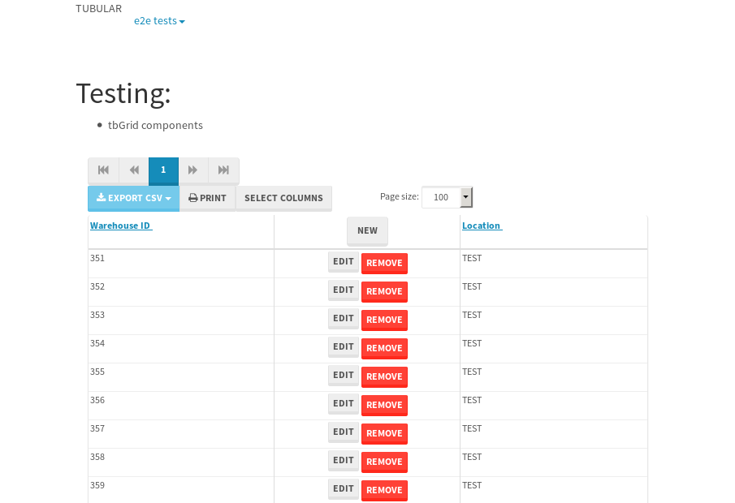
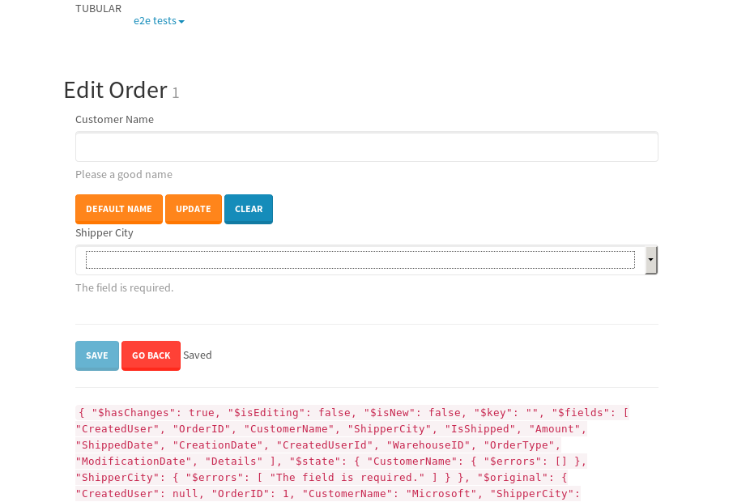

tbColumn.Grid Sorting - 175.727sTests: 5Skipped: 0Failures: 3 should sort data in ascending order then on descending order when sorting by Order Id column - 43.994sExpected '1' to be '500'.✗Expected '20' to be '481'.✗Tests passed: 50.00%should order data in ascending order when click-sorting an unsorted text column - 22.944sTests passed: 100.00%should order data in descending order when click-sorting an ascending-sorted text column - 42.935sExpected 'Advanced Technology Systems' to be 'Vesta'.✗Tests passed: 0.00%should order data in ascending order when click-sorting an unsorted date column - 22.978sTests passed: 100.00%should order data in descending order when click-sorting twice an unsorted date column - 42.869sExpected '12/30/2015' to match /1\/01\/2016/.✗Tests passed: 0.00%
tbEmptyForm - 1.921sTests: 3Skipped: 0Failures: 0 should have an empty required field - 0.323sTests passed: 100.00%should not be able to click on save - 0.026sTests passed: 100.00%should load default value for numeric field - 0.028sTests passed: 100.00%
Tubular Filters.tbColumnFilter - 93.471sTests: 12Skipped: 0Failures: 0 should cancel filtering when clicking outside filter-popover - 7.247sTests passed: 100.00%should disable Value text-input for "None" filter - 5.519sTests passed: 100.00%should disable apply button for "None" filter - 5.638sTests passed: 100.00%should decorate popover button when showing data is being filtered for its column - 11.086sTests passed: 100.00%should correctly filter data for the "Equals" filtering option - 7.344sTests passed: 100.00%should correctly filter data for the "Not Equals" filtering option - 7.36sTests passed: 100.00%should correctly filter data for the "Contains" filtering option - 7.161sTests passed: 100.00%should correctly filter data for the "Not Contains" filtering option - 7.412sTests passed: 100.00%should correctly filter data for the "Starts With" filtering option - 5.853sTests passed: 100.00%should correctly filter data for the "Not Starts With" filtering option - 5.895sTests passed: 100.00%should correctly filter data for the "Ends With" filtering option - 5.931sTests passed: 100.00%should correctly filter data for the "Not Ends With" filtering option - 5.975sTests passed: 100.00%
Tubular Filters.tbColumnDateTimeFilter - 122.431sTests: 12Skipped: 0Failures: 0 should cancel filtering when clicking outside filter-popover - 6.113sTests passed: 100.00%should disable Value text-input for "None" filter - 5.52sTests passed: 100.00%should disable apply button for "None" filter - 5.628sTests passed: 100.00%should clear filtering when clicking on Clean button - 16.617sTests passed: 100.00%should decorate popover button when showing data is being filtered for its column - 10.945sTests passed: 100.00%should correctly filter data for the "Equals" filtering option - 5.992sTests passed: 100.00%should correctly filter data for the "Not Equals" filtering option - 6.308sTests passed: 100.00%should correctly filter data for the "Between" filtering option - 10.961sTests passed: 100.00%should correctly filter data for the "Greater-or-equal" filtering option - 11.191sTests passed: 100.00%should correctly filter data for the "Greater" filtering option - 10.802sTests passed: 100.00%should correctly filter data for the "Less-or-equal" filtering option - 10.705sTests passed: 100.00%should correctly filter data for the "Less" filtering option - 10.685sTests passed: 100.00%
Tubular Filters.tbColumnOptionsFilter - 77.549sTests: 3Skipped: 0Failures: 0 should cancel filtering when clicking outside filter-popover - 7.379sTests passed: 100.00%should decorate popover button when showing data is being filtered for its column - 10.976sTests passed: 100.00%should filter column-elements in accordance to the selected filter when selecting a single option - 47.841sTests passed: 100.00%
Tubular Filters.tbTextSearch - 43.607sTests: 5Skipped: 0Failures: 0 min-chars is not set - 0.077sTests passed: 100.00%should filter data in searchable-column customer name to matching inputted text, starting from 3 characters - 5.832sTests passed: 100.00%should filter data in searchable-column shipper city to matching inputted text, starting from 3 characters - 10.996sTests passed: 100.00%should show clear button when there is inputted text only - 5.587sTests passed: 100.00%should clear filtering when clicking clear button - 15.387sTests passed: 100.00%
tbForm related components.tbCheckboxField - 20.436sTests: 2Skipped: 0Failures: 1 should save changes on "SAVE" - 18.206sExpected 51 to be -1.✗Tests passed: 50.00%should discard changes on "CANCEL" - 1.044sTests passed: 100.00%
tbForm related components.tbDropDownEditor - 21.886sTests: 5Skipped: 0Failures: 0 should set initial input value to the value of "value" attribute when defined - 0.759sTests passed: 100.00%should show the component name value in a label field when "showLabel" attribute is true - 0.774sTests passed: 100.00%should show a help field equal to this attribute, is present - 0.734sTests passed: 100.00%should submit modifications to item/server when clicking form "Save" - 17.915sTests passed: 100.00%should NOT submit modifications to item/server when clicking form "Cancel" - 1.032sTests passed: 100.00%
tbForm related components.tbTextArea - 23.662sTests: 7Skipped: 0Failures: 0 should set initial input value to the value of "value" attribute when defined - 0.758sTests passed: 100.00%should be invalidated when the number of chars is not in the range of "min" and "max" attributes - 1.084sTests passed: 100.00%should show the component name value in a label field when "showLabel" attribute is true - 0.7sTests passed: 100.00%should show a help field equal to this attribute, is present - 0.683sTests passed: 100.00%should require the field when the attribute "required" is true - 0.846sTests passed: 100.00%should submit modifications to item/server when clicking form "Save" - 17.834sTests passed: 100.00%should NOT submit modifications to item/server when clicking form "Cancel" - 1.056sTests passed: 100.00%
tbForm related components.tbDateEditor - 23.264sTests: 6Skipped: 0Failures: 0 should set initial date value to the value of "value" attribute when defined - 0.758sTests passed: 100.00%should be invalidated when the date is not in the range of "min" and "max" attributes - 1.21sTests passed: 100.00%should show the component name value in a label field when "showLabel" attribute is true - 0.711sTests passed: 100.00%should show a help field equal to this attribute, is present - 0.623sTests passed: 100.00%should submit modifications to item/server when clicking form "Save" - 17.826sTests passed: 100.00%should NOT submit modifications to item/server when clicking form "Cancel" - 1.199sTests passed: 100.00%
tbForm related components.tbTypeaheadEditor - 26.579sTests: 7Skipped: 0Failures: 1 should show an options list when there is an API-info/component entered-data - 1.23sTests passed: 100.00%should select the option clicked - 1.279sTests passed: 100.00%should show a "delete" button when an option/match is selected, and delete the option if button is clicked - 1.693sTests passed: 100.00%should show a label value equal to the component name when "showLabel" attribute is true - 0.887sTests passed: 100.00%should require a value when "require" attribute is true - 1.361sTests passed: 100.00%should submit modifications to item/server when clicking form "Save" - 18.13sExpected 'Guadalajara, JAL, Mexico' to match 'Portland, OR, USA'.✗Tests passed: 0.00%should NOT submit modifications to item/server when clicking form "Cancel" - 1.144sTests passed: 100.00%
tbForm related components.tbSimpleEditor - 25.097sTests: 9Skipped: 0Failures: 0 should set initial input value to the value of "value" attribute when defined - 0.586sTests passed: 100.00%should be invalidated when the number of chars is not in the range of "min" and "max" attributes - 0.997sTests passed: 100.00%should show the component name value in a label field when "showLabel" attribute is true - 0.591sTests passed: 100.00%should set input placeholder to the value of "placeholder" attribute - 0.869sTests passed: 100.00%should validate the control using the "regex" attribute, if present - 0.74sTests passed: 100.00%should show a help field equal to this attribute, is present - 0.594sTests passed: 100.00%should require the field when the attribute "required" is true - 0.94sTests passed: 100.00%should submit modifications to item/server when clicking form "Save" - 18.178sTests passed: 100.00%should NOT submit modifications to item/server when clicking form "Cancel" - 1.052sTests passed: 100.00%
tbForm related components.tbNumericEditor - 24.461sTests: 7Skipped: 0Failures: 0 should set initial component value to the value of "value" attribute when defined - 0.671sTests passed: 100.00%should be invalidated when the entered number is not in the range of "min" and "max" attributes - 1.447sTests passed: 100.00%should show the component name value in a label field when "showLabel" attribute is true - 0.745sTests passed: 100.00%should show a help field equal to this attribute, is present - 0.779sTests passed: 100.00%should require the field when the attribute "required" is true - 0.895sTests passed: 100.00%should submit modifications to item/server when clicking form "Save" - 18.119sTests passed: 100.00%should NOT submit modifications to item/server when clicking form "Cancel" - 1.132sTests passed: 100.00%
tbForm Connection Error NoModelKey - 1.997sTests: 1Skipped: 0Failures: 0 tbForm connection error functionality - 0.004sTests passed: 100.00%
tbForm Connection Error NoServerUrl - 1.81sTests: 1Skipped: 0Failures: 0 tbForm connection error functionality - 0.002sTests passed: 100.00%
tbGridComponents - 30.312sTests: 6Skipped: 0Failures: 1 should add item with newRow method - 4.179sTests passed: 100.00%should add item with newRow method and cancel action - 0.493sTests passed: 100.00%should update item with tbSaveButton - 2.263sTests passed: 100.00%should NOT update item on cancel Update action - 0.694sTests passed: 100.00%should remove item with tbRemoveButton - 20.553sExpected 44 not to be 44, 'should remove the row from the table'.✗Tests passed: 50.00%should NOT remove item on cancel Remove action - 0.76sTests passed: 100.00%
tbGridPager.navigation buttons - 2.424sTests: 1Skipped: 0Failures: 0 should perform no action when clicking on the numbered navigation button corresponding to the current-showing results page - 0.581sTests passed: 100.00%
tbGridPager.navigation buttons.first/non-last results page related functionality - 0.663sTests: 2Skipped: 0Failures: 0 should disable "first" and "previous" navigation buttons when in first results page - 0.101sTests passed: 100.00%should enable "last" and "next" navigation buttons when in a results page other than last - 0.562sTests passed: 100.00%
tbGridPager.navigation buttons.last/non-first results page related functionality - 1.179sTests: 2Skipped: 0Failures: 0 should disable "last" and "next" navigation buttons when in last results page - 0.546sTests passed: 100.00%should enable "first" and "previous" navigation buttons when in a results page other than first - 0.632sTests passed: 100.00%
tbGridPager.page navigation - 3.566sTests: 5Skipped: 0Failures: 0 should go to next results page when clicking on next navigation button - 1.003sTests passed: 100.00%should go to previous results page when clicking on previous navigation button - 0.97sTests passed: 100.00%should go to last results page when clicking on last navigation button - 0.567sTests passed: 100.00%should go to first results page when clicking on first navigation button - 0.541sTests passed: 100.00%should go to corresponding results page when clicking on a numbered navigation button - 0.485sTests passed: 100.00%
tbGridPagerInfo - 3.986sTests: 2Skipped: 0Failures: 0 should show text in accordance to numbered of filter rows and current results-page - 1.639sTests passed: 100.00%should show count in footer - 0.03sTests passed: 100.00%
tbPageSizeSelctor - 11.888sTests: 4Skipped: 0Failures: 0 should filter up to 10 data rows per page when selecting a page size of "10" - 2.57sTests passed: 100.00%should filter up to 20 data rows per page when selecting a page size of "20" - 2.361sTests passed: 100.00%should filter up to 50 data rows per page when selecting a page size of "50" - 2.499sTests passed: 100.00%should filter up to 100 data rows per page when selecting a page size of "100" - 2.596sTests passed: 100.00%
tbSingleForm - 13.023sTests: 8Skipped: 1Failures: 1 should load correct info - 0s***Skipped***Tests passed: 0%should change customer name - 1.801sTests passed: 100.00%should save it - 2.03sExpected '' to be 'Saved'.✗Tests passed: 50.00%should clear the inputs - 1.717sTests passed: 100.00%should update - 2.044sTests passed: 100.00%should reset editor - 1.806sTests passed: 100.00%should not save if not Changes - 1.751sTests passed: 100.00%should not be able to click on save - 1.873sTests passed: 100.00%


{kind=link}
{kind=link}